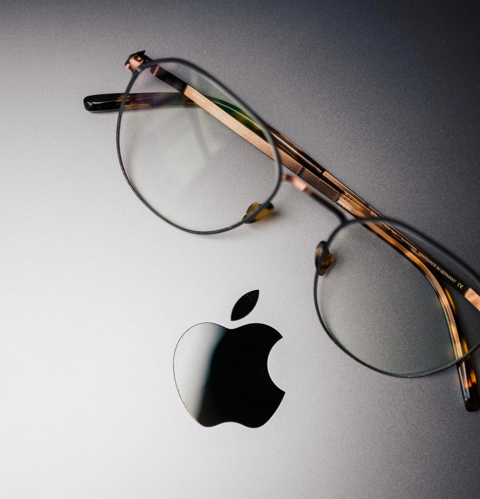
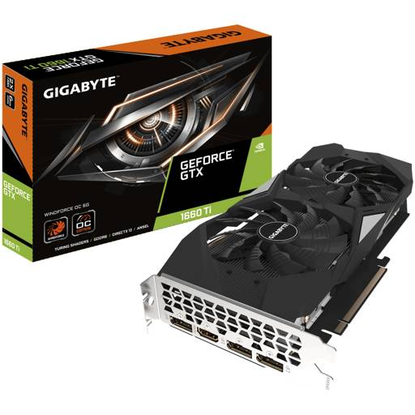

¿Apple vision lite?
Apple planea lanzar los Apple Vision Lite, una versión más asequible de sus gafas de realidad aumentada. Estos dispositivos ofrecerán una experiencia de RA de alta calidad, pero con menos funciones que los modelos Pro, lo que los hace más accesibles para un público más amplio. Este movimiento podría impulsar la adopción de la realidad aumentada a gran escala.
la llegada del iphone 15 y lo que trae consigo

"El iPhone 15 trae consigo una reducción de precio significativa en comparación con sus predecesores, haciéndolo más accesible. Esto permite que más personas disfruten de la última tecnología de Apple a un costo más bajo. A pesar de la baja de precio, mantiene su calidad de construcción y características avanzadas, lo que lo convierte en una opción atractiva para los amantes de la tecnología en busca de una excelente relación calidad-precio en un smartphone de gama alta."
Ps5 luchando fuertemente
"El PS5 enfrenta un desafío crucial para mantener su ventaja en la generación actual de consolas: la necesidad de asegurar exclusivos de alta calidad. Con la competencia en aumento, Sony trabaja arduamente para mantener su atractivo a través de títulos exclusivos que atraigan a los jugadores a su plataforma."
Sigue el bajon de tarjetas de videos
La disminución de la minería de Ethereum ha llevado a una reducción de precios en las tarjetas gráficas. Esto beneficia a los jugadores y creadores, quienes ahora pueden acceder a hardware de alto rendimiento a precios más bajos. La disponibilidad mejorada y la menor especulación hacen que el mercado sea más favorable para los consumidores